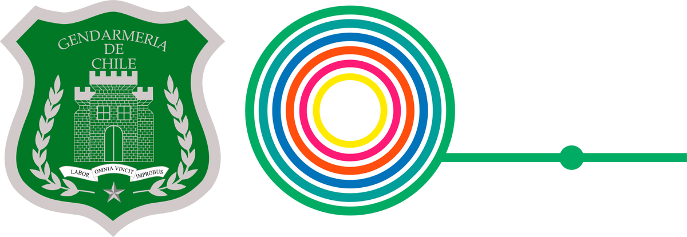

Medicina General
Diagnóstico y tratamiento oportuno para toda la familia, en tu hogar.
Cuidamos de ti, estés donde estés
Atención integral para ti y tu familia en toda la Región Metropolitana, con consulta a domicilio.
Respondemos por WhatsApp en minutos
Atención solo a domicilio
Toda la Región Metropolitana
Profesionales de la salud
Agenda por WhatsApp
Atención profesional en la comodidad de tu hogar, en toda la Región Metropolitana.
Diagnóstico y tratamiento oportuno para toda la familia, en tu hogar.
Curaciones, inyecciones y cuidados de enfermería sin salir de casa.
Rehabilitación física y tratamiento de dolores musculares en tu hogar.
Acompañamiento emocional profesional, en un espacio de confianza.
Seguimiento de patologías crónicas sin que tengas que salir de casa.
Cuidado profesional de pies para tu bienestar diario, a domicilio.
Apoyo para recuperar autonomía en las actividades de tu día a día.
Evaluación y terapia del habla, voz y deglución en tu hogar.
Planes alimentarios personalizados según tus objetivos de salud.
Toma de muestras en tu domicilio.
Evaluación y programa personalizado.
Revisa nuestras especialidades y define la atención que necesitas.
Cuéntanos qué necesitas y coordinamos contigo el detalle de tu hora.
Recibes la confirmación con fecha, hora y dirección de la visita.
Consulta Médica Renacer es un centro de atención en salud orientado a entregar una atención profesional, cercana, oportuna y de calidad, poniendo siempre a las personas y sus necesidades en el centro de nuestro trabajo.
Nuestro propósito es facilitar el acceso a la atención de salud, llevando nuestros servicios directamente al domicilio de nuestros pacientes, adaptándonos a las necesidades de ellos, sus familias y organizaciones.
Contamos con un equipo de profesionales y técnicos comprometidos con brindar una atención responsable, humana y personalizada, procurando que cada paciente reciba una orientación adecuada y un servicio basado en el respeto, la empatía y la confianza.
En Consulta Médica Renacer creemos que cuidar la salud no significa solamente atender una enfermedad, sino también prevenir, orientar, acompañar y promover una mejor calidad de vida.
"Renacer es cuidar, acompañar y estar cuando más nos necesitas."
Brindar servicios de salud integrales, oportunos, accesibles y de calidad, entregando una atención centrada en las personas, con un equipo comprometido con el bienestar de nuestros pacientes y sus familias.
Buscamos facilitar el acceso a la atención de salud mediante servicios domiciliarios, entregando una atención basada en la empatía, respeto, seguridad, profesionalismo y compromiso, contribuyendo a la prevención, recuperación y mejor calidad de vida de nuestra comunidad.
Ser una institución de salud reconocida y valorada por la comunidad, destacándonos por la calidad de nuestros servicios, la atención humana y personalizada y nuestro compromiso permanente con nuestros pacientes.
Aspiramos a crecer de manera responsable, incorporando nuevos servicios y soluciones de atención que permitan acercar la salud a las personas, sus hogares, lugares de trabajo y organizaciones.
Queremos que Consulta Médica Renacer sea sinónimo de confianza, cercanía, calidad y compromiso con la salud.
Tratamos a cada persona con respeto, empatía y sensibilidad, comprendiendo que detrás de cada paciente existe una historia y una necesidad particular.
Trabajamos con responsabilidad, compromiso y vocación de servicio, procurando entregar una atención segura y de calidad.
Valoramos la dignidad, privacidad y derechos de cada paciente, independiente de su edad, condición o situación.
Buscamos facilitar el acceso a la atención de salud en el momento en que nuestros pacientes la necesitan.
Construimos relaciones basadas en la responsabilidad, transparencia y confidencialidad.
Promovemos el cuidado de la salud y la prevención como herramientas fundamentales para mejorar la calidad de vida.
Trabajamos para acercar los servicios de salud a las personas, familias, empresas e instituciones.
Buscamos mejorar continuamente nuestros procesos y servicios para entregar una experiencia de atención cada vez mejor.
Trabajamos con instituciones para acercar la salud a sus funcionarios y familias.

Mi Bienestar — Gendarmería de Chile
¿Tu institución quiere un convenio? Escríbenos
Escribir por WhatsAppResolvemos las dudas más comunes sobre nuestra atención a domicilio.
Agendas por WhatsApp, coordinamos la hora y un profesional te visita en tu domicilio con lo necesario para tu atención.
Atendemos en toda la Región Metropolitana. Cuéntanos tu dirección por WhatsApp y te confirmamos el tiempo estimado de llegada.
El tiempo de coordinación depende de la disponibilidad y tu urgencia. Escríbenos por WhatsApp y te confirmamos el horario más próximo disponible.
Estamos actualizando el detalle de convenios vigentes con Fonasa, Isapres e instituciones. Escríbenos por WhatsApp y te confirmamos tu caso puntual.
Dependiendo del tipo de atención, te indicaremos por WhatsApp si necesitas preparar algo especial antes de la visita.
Al momento de tomar la muestra en tu domicilio te indicamos el canal y el tiempo estimado de entrega de tus resultados.